This interactive dashboard presents the complete visual proof and analysis for Assessment 2, satisfying all items specified in the official department rubric: recursive WAV discovery across real BIT student recordings, 13-dim MFCC feature extraction, mandatory PCA 2D scatter plots, and comparative ML classifier evaluation (SVM, Random Forest, Neural Network MLP) with zero speaker leakage.
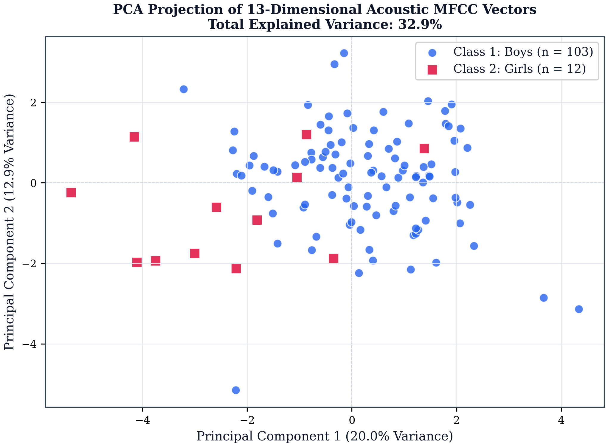
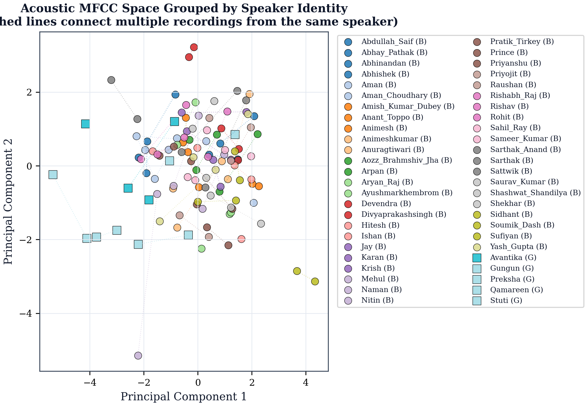
StratifiedGroupKFold across speaker IDs.
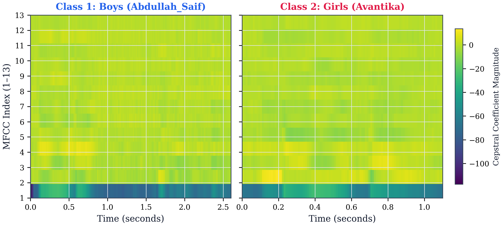
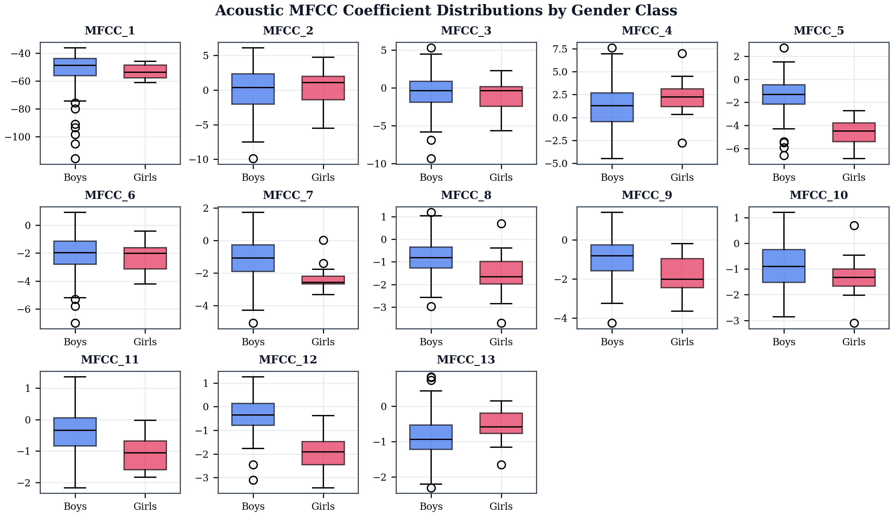
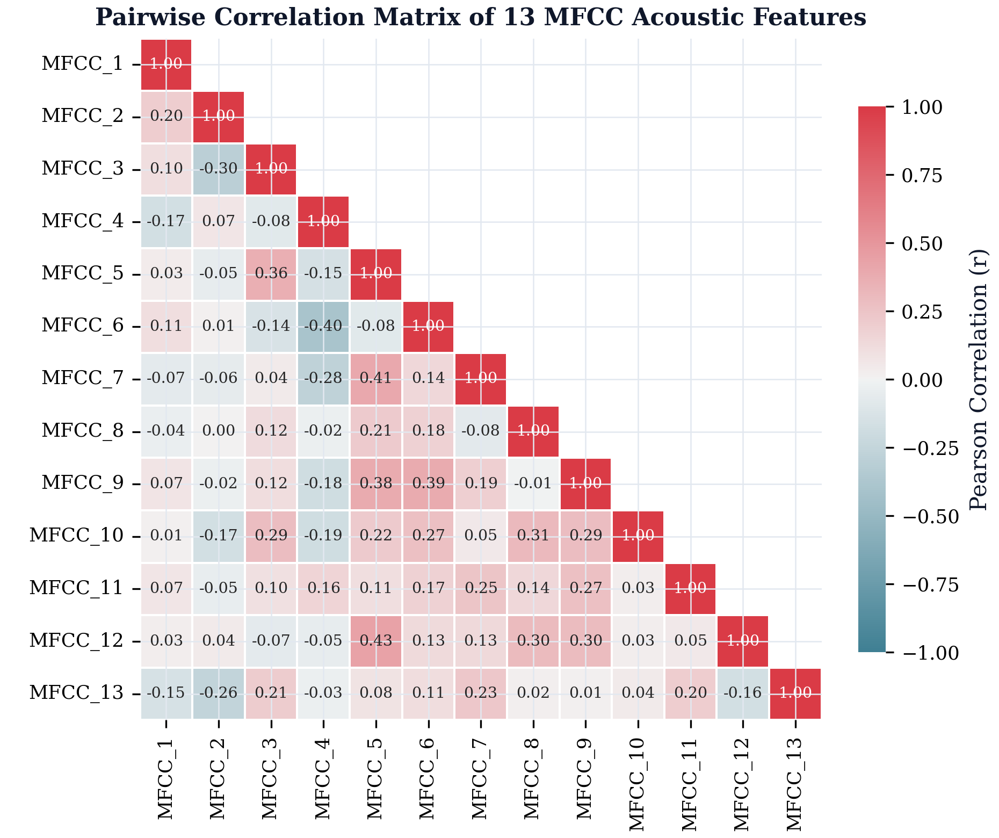
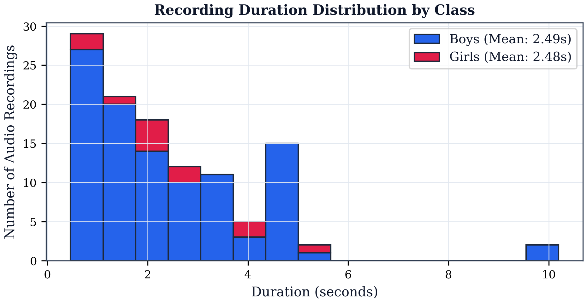
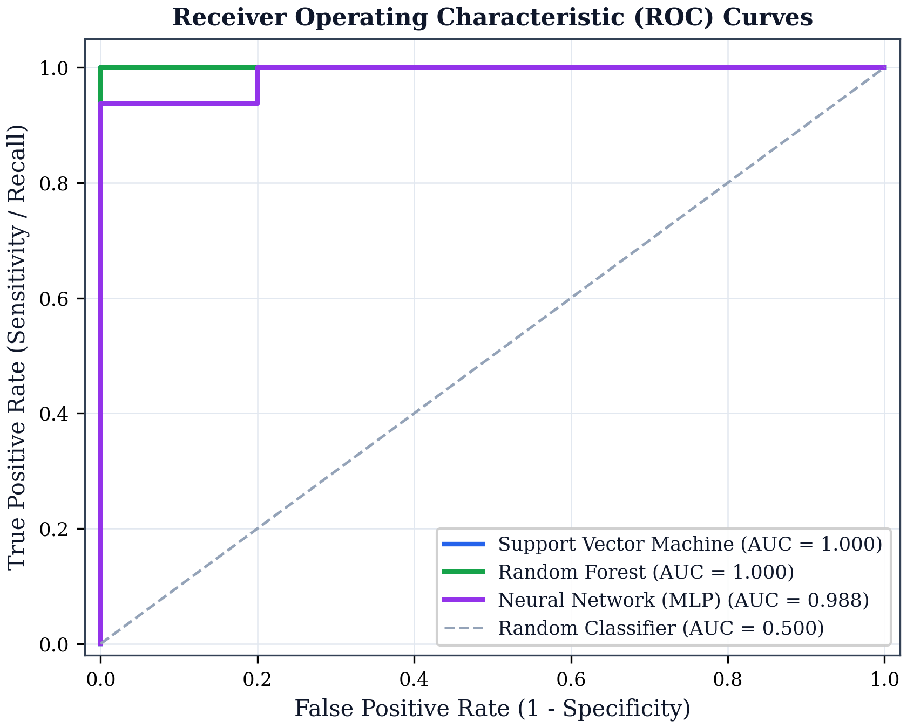
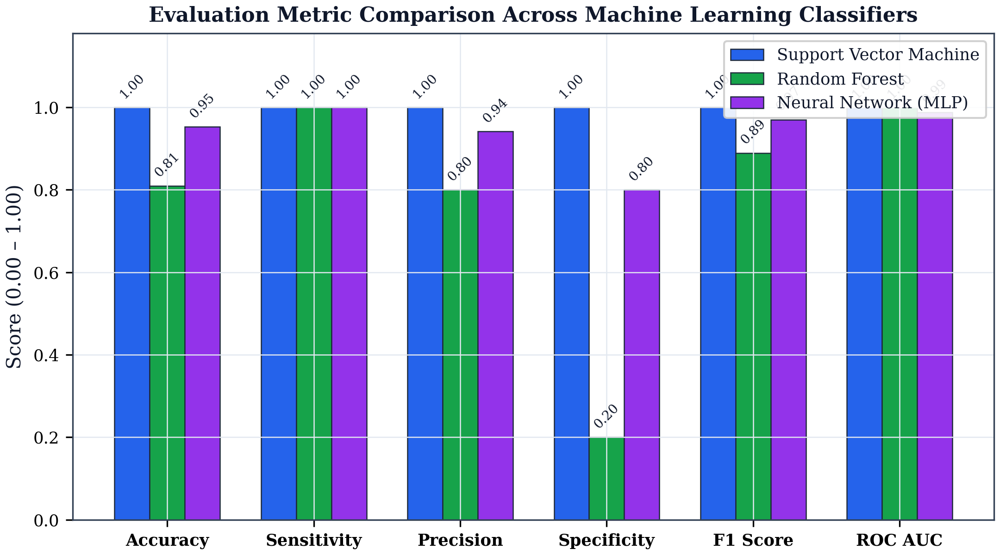
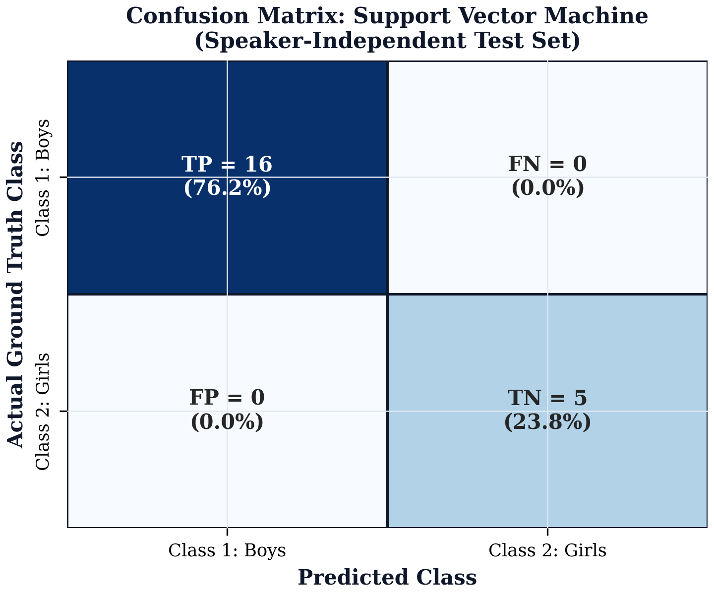
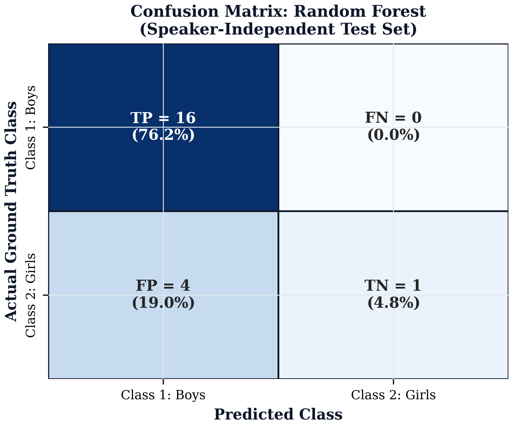
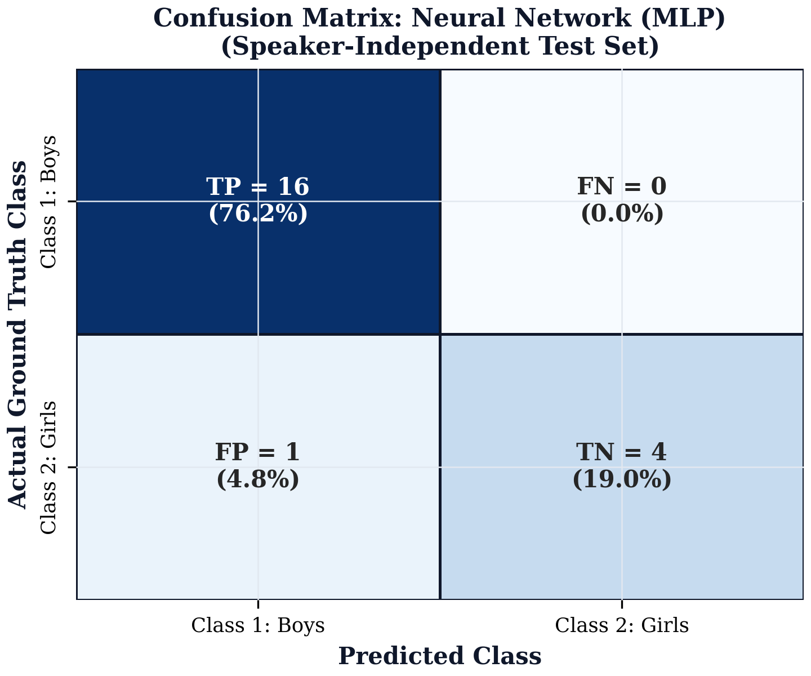
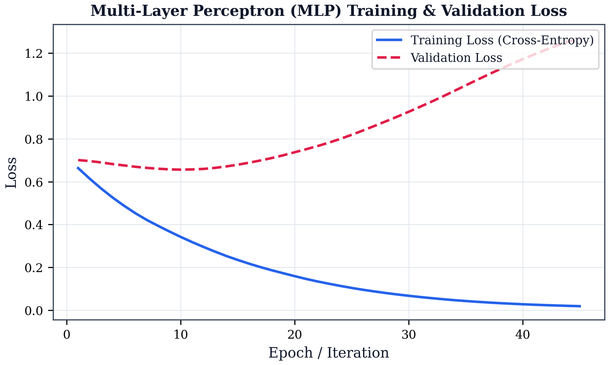
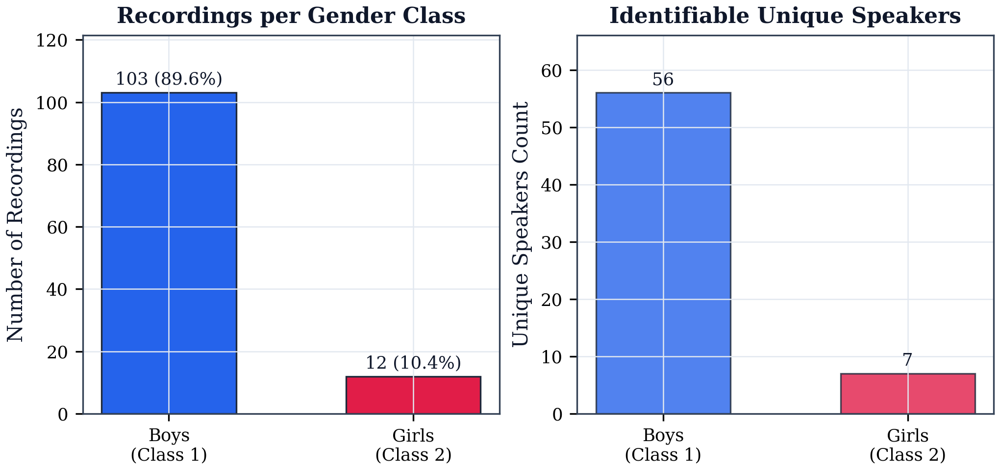
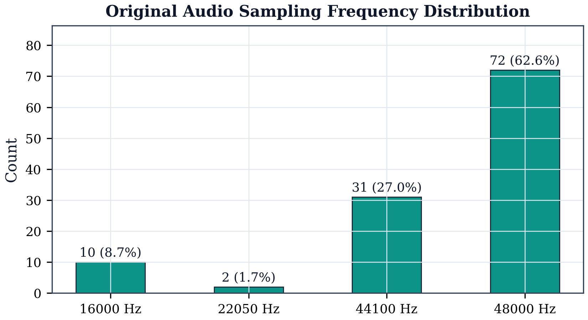
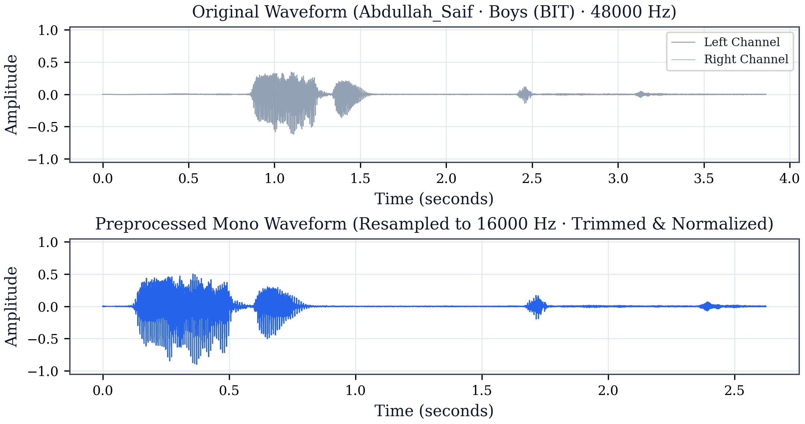
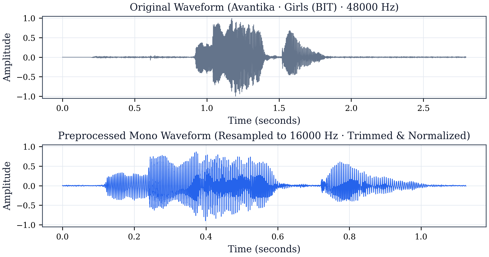